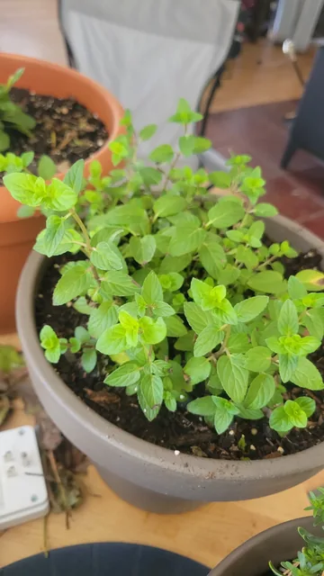
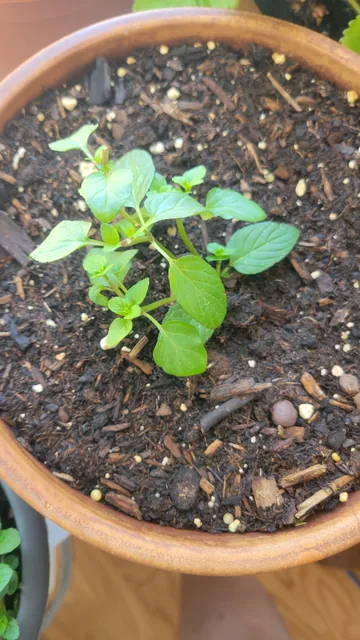
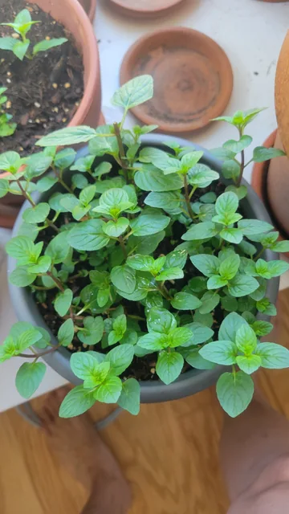
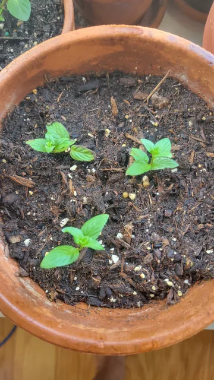
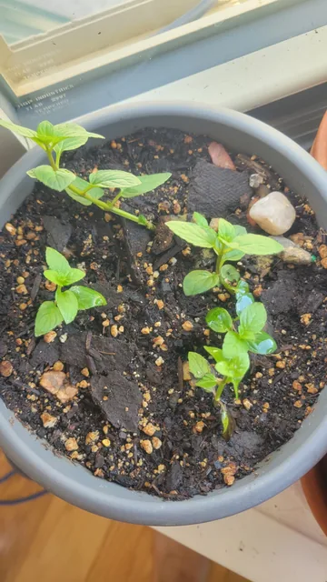
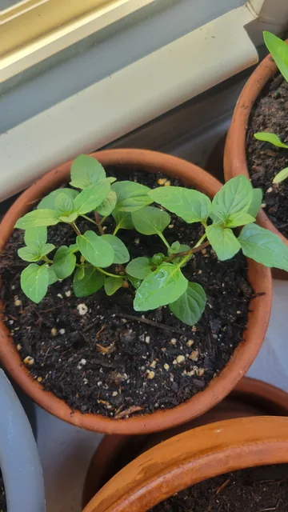
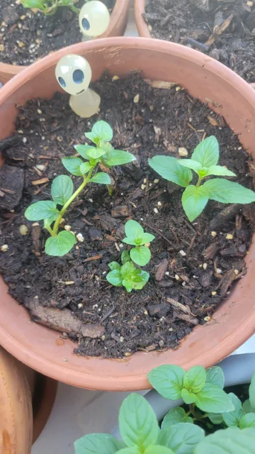

Mint #1 · bushy taupe-gray pot
Taupe-gray pot on table; bushy pointed green leaves and some purplish stems

Archived November 8, 2026 · No reminders
Seven distinct mint pots. Photos and prior state keys are preserved; mint has no active watering, care or harvest reminders.
Taupe-gray pot on table; bushy pointed green leaves and some purplish stems

Archived November 8, 2026 · No reminders
Terracotta pot; small central multi-shoot cluster and two visible clay balls toward foreground

Archived November 8, 2026 · No reminders
Blue-gray pot on sill; dense broader rounded foliage, conspicuous cut stem, wet leaves

Archived November 8, 2026 · No reminders
Terracotta pot with pale rim wear; three small separate shoot clusters and no figurine visible

Archived November 8, 2026 · No reminders
Gray plastic-looking pot; sparse shoot groups, pale/white stone and large bark pieces

Archived November 8, 2026 · No reminders
Smaller terracotta near window; low branching leafy cluster, no figurine visible

Archived November 8, 2026 · No reminders
Terracotta pot; upright pale figurine and three sparse shoot clusters

Archived November 8, 2026 · No reminders